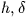

Next: SLA_H2FK5 - Hipparcos to FK5
Up: SUBPROGRAM SPECIFICATIONS
Previous: SLA_GRESID - Gaussian Residual
SLA_H2E - Az,El to 
- ACTION:
- Horizon to equatorial coordinates
(single precision).
- CALL:
- CALL sla_H2E (AZ, EL, PHI, HA, DEC)
- GIVEN:
-
| AZ |
R |
azimuth (radians) |
|---|
| EL |
R |
elevation (radians) |
| PHI |
R |
latitude (radians) |
- RETURNED:
-
| HA |
R |
hour angle (radians) |
|---|
| DEC |
R |
declination (radians) |
- NOTES:
- 1.
- The sign convention for azimuth is north zero, east
 .
. - 2.
- HA is returned in the range
 . Declination is returned
in the range .
. Declination is returned
in the range . - 3.
- The latitude is (in principle) geodetic. In critical
applications, corrections for polar motion should be applied
(see sla_POLMO).
- 4.
- In some applications it will be important to specify the
correct type of elevation in order to produce the required
type of
![$[\,h,\delta\,]$](img29.gif) . In particular, it may be important to
distinguish between the elevation as affected by refraction,
which will yield the observed , and the elevation
in vacuo, which will yield the topocentric
. If the
effects of diurnal aberration can be neglected, the
topocentric may be used as an approximation to the
apparent .
. In particular, it may be important to
distinguish between the elevation as affected by refraction,
which will yield the observed , and the elevation
in vacuo, which will yield the topocentric
. If the
effects of diurnal aberration can be neglected, the
topocentric may be used as an approximation to the
apparent . - 5.
- No range checking of arguments is carried out.
- 6.
- In applications which involve many such calculations, rather
than calling the present routine it will be more efficient to
use inline code, having previously computed fixed terms such
as sine and cosine of latitude.
Next: SLA_H2FK5 - Hipparcos to FK5
Up: SUBPROGRAM SPECIFICATIONS
Previous: SLA_GRESID - Gaussian Residual
SLALIB --- Positional Astronomy Library
Starlink User Note 67
P. T. Wallace
12 October 1999
E-mail:ptw@star.rl.ac.uk